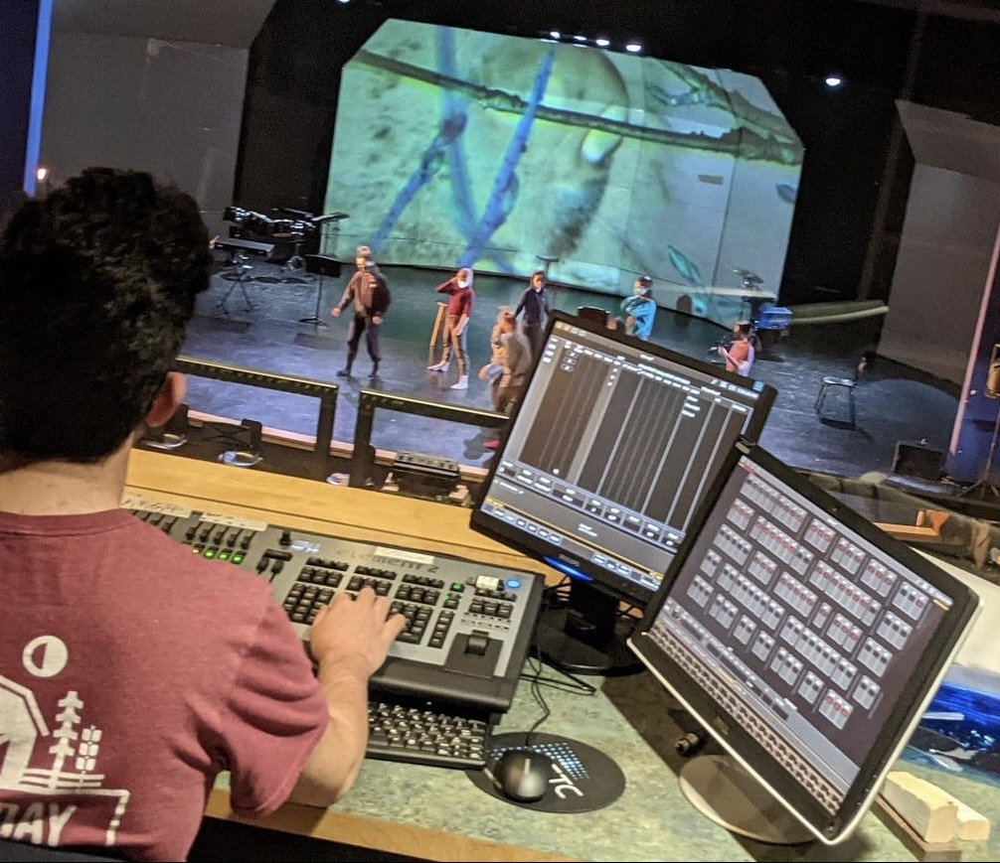

Email: ElijahFrankle626@gmail.com
Phone: 805-990-0805
Resume: Click here to view
I'm a designer, programmer, and developer working at the intersection of design and technology. My work focuses on how creative software and new approaches can expand what's possible with media, lighting, and more to create more immersive, interactive, and innovative experiences. Across sensors, lighting consoles, media servers, game engines, and whatever I'm tinkering with at the moment, I love to design shows and develop systems simultaneously to create truly unique results.
This fall I will begin my MFA at Carnegie Mellon University in Video and Media Design, having completed my BS in Computer Science at the University of California Santa Barbara.
Areas of interest include: